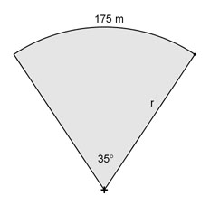

Flächenberechnungen Aufgabe 43 Ein Bahngleis macht über einen Winkel von 35° einen 175 m langen Bogen. Welchen Durchmesser hat der Kreis, auf dem der Zug fährt?  2 * π * r * α° b = ---------------- | *360° 360° b * 360° = 2 * π * r * α° | : 2 * π * α° b * 360° 175 m * 360° r = ------------- = ---------------- = 2 * π * α° 2 * π * 35° r = 286,6 m d = 2 * r = 2 * 286,6 m = 573,2 m